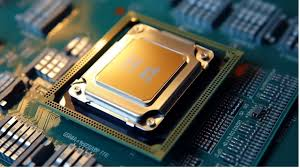
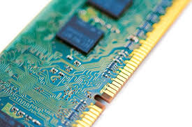
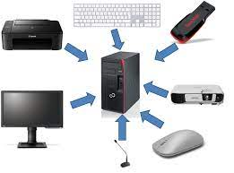

Entender a estrutura de um computador é fundamental para entendermos como funcionam os processos internos,
podendo trazer melhor entendimento sobre o comportamento do computador.
A parte física de um computador é chamada de Hardware, e ela possui 3 partes fundamentais para seu
funcionamento, são elas :
CPU

A CPU, também conhecida como Unidade Central de Processamento ou processador, é o "cérebro" do
computador. É o principal componente responsável por executar instruções e realizar cálculos matemáticos
e lógicos, permitindo que o computador funcione.
Funciona como um maestro, coordenando todas as operações do computador e garantindo que os programas
sejam executados de forma eficiente.
Suas principais funções são :
Buscar e decodificar instruções
Executar instruções
Controlar o fluxo de dados
Gerenciar o tempo de processamento
A CPU é um componente essencial para o funcionamento do computador. Sua principal função é executar instruções e realizar cálculos, permitindo que o computador realize diversas tarefas.
Memória Principal

A memória principal, também conhecida como memória RAM (Random Access Memory), é um tipo de memória volátil que armazena dados e instruções que estão sendo utilizados pelo computador no momento. Ela é crucial para o funcionamento rápido e eficiente do sistema, pois permite que a CPU acesse os dados necessários de forma rápida e direta.
Dentro de suas principais características está :
Volatilidade: A memória principal é volátil, ou seja, perde os dados quando o computador é desligado ou reiniciado
Acesso aleatório: A memória principal oferece acesso aleatório aos dados, o que significa que a CPU pode acessar qualquer local da memória com a mesma velocidade
Alta velocidade: A memória principal é muito mais rápida do que a memória secundária, o que permite que a CPU acesse os dados necessários de forma rápida e eficiente.
Em resumo, a memória principal é um componente essencial para o funcionamento rápido e eficiente do computador. Ela armazena dados e instruções que estão sendo utilizados no momento, permitindo que a CPU acesse os dados de forma rápida e direta. A capacidade, velocidade e latência da memória principal são fatores importantes que influenciam no desempenho do computador.
Unidades de Entrada e Saída

As Unidades de Entrada e Saída (E/S), também conhecidas como periféricos, são os componentes de um computador que permitem a interação entre o usuário e o sistema. Elas possibilitam que o usuário insira dados e informações no computador (entrada) e receba informações processadas pelo computador (saída).
Entrada
Saída
Teclado
Monitor
Mouse
Headset
Microfone
Impressora
Câmera Web
Alto Falante
Funções dos dispositivos de Entrada e Saída :
Comunicação entre o usuário e o computador: As unidades de E/S permitem que o usuário se comunique com o computador, inserindo dados e informações e recebendo os resultados do processamento.
Interação com o ambiente: As unidades de E/S permitem que o computador interaja com o ambiente externo, capturando informações do mundo real e enviando informações para outros dispositivos.
Acessível a pessoas com deficiências: As unidades de E/S podem ser utilizadas para tornar o computador acessível a pessoas com deficiências, como teclados braille e softwares de leitura de tela
Em resumo, as unidades de entrada e saída são componentes essenciais para o funcionamento de um computador, permitindo a interação entre o usuário e o sistema, a comunicação com o ambiente externo e a automação de tarefas.
Na parte de Software, que é a parte que contêm todos os programas e instruções que definem o que o computador deve fazer, temos :
Sistema Operacional (SO): Gerencia os recursos do hardware e fornece uma plataforma para a execução de outros programas. Exemplos de SOs populares incluem Windows, macOS e Linux.
Programas de Aplicação: Permitem ao usuário realizar tarefas específicas, como editar textos, navegar na internet, jogar, etc. Exemplos de programas de aplicação incluem Microsoft Word, Google Chrome
Drivers: Permitem que o sistema operacional se comunique com os dispositivos de hardware.
Utilitários: Ferramentas que ajudam o usuário a realizar tarefas de manutenção e gerenciamento do computador.
Em resumo
Essas são as partes mais importantes e introdutórias para aprendermos mais sobre a estrutura de um computador, porém óbvio que existem mais peças que também executam papéis importantes, mas como queremos focar no básico e dar um conhecimento bom e geral, essas partes que foram citadas são as principais.